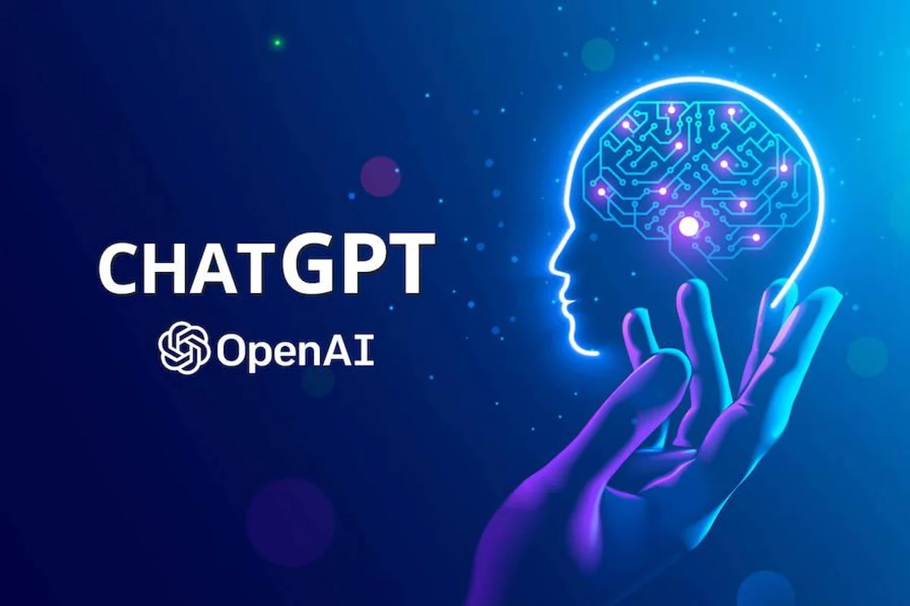

Die Künstliche Intelligenz
Künstliche Intelligenz ist eine Technologie, die es Maschinen und Computern ermöglicht, menschliche Intelligenz nachzuahmen und durch algorithmisches Training aus Erfahrungen zu lernen. Die künstliche Intelligenz soll dazu dienen, Probleme zu lösen, Lösungen zu finden, Fragen zu beantworten und Vorhersagen zu treffen, die wir Menschen innerhalb von wenigen Sekunden zur Hand erhalten. Durch diese Fähigkeiten ist die KI für moderne Unternehmen und Organisation unglaublich wichtig geworden.
KI-Systeme kombinieren große Datensätze mit iterativen (wiederholend) Verarbeitungsalgorithmen, um aus Mustern und Merkmalen in den von den Menschen analysierten Daten zu lernen. Jedes Mal, wenn ein KI-System eine Datenverarbeitung durchführt, überprüft es seine eigenen Leistungen und entwickelt zusätzliches Wissen. Da die KI ständig am laufen ist, kann sie schnell hunderte, tausende oder sogar Millionen von Aufgaben erledigen und dabei in kürzester Zeit viel lernen.
Das Ziel der KI-Wissenschaft ist der Aufbau eines Computersystems, welches in der Lage ist, menschliches Verhalten so zu bearbeiten, dass es menschliche Denkprozesse durchführen kann, um grosse Probleme zu lösen, welche wir nicht können. Um dieses Ziel zu erreichen, nutzen KI-Systeme eine ganze Reihe von Techniken, Prozesse und Technologien.
Ein KI-System besteht aus vielen verschiedenen Bestandteile, die man sich als Teilbereiche der Wissenschaft der künstlichen Intelligenz vorstellen kann. Der häufig genutzte Bereich der KI-Technologie ist beispielweise das «Deep Learning», welches durch maschinelles Lernen, d.h. die Maschine bzw. der Computer trainiert aus Daten und Erfahrungen und versucht dabei sich selber zu verbessern anstatt man das man genaue eine Funktion programmiert.
Wenn du mehr über das Deep Learning und über das maschinelles Lernen erfahren willst, klicke hier.
Wir unter scheiden zwei Arten der künstlichen Intelligenz: die schwache KI und die starke KI.
Die schwache KI ist darauf fokussiert, ganz bestimmte Aufgaben auszuführen. Der Großteil unseres Alltages ist umgeben von der schwachen KI, wie beispielsweise Google Translate, welche uns Texte übersetzt oder auch Navigationssysteme. Digitale Assistenzsysteme wie Alexa oder Siri gehören auch zur schwachen KI.

Die starke KI besteht aus künstlicher allgemeiner Intelligenz, bei der eine Maschine über eine Intelligenz verfügt, die der von Menschen entspricht, und künstlicher Superintelligenz, bei der die Intelligenz und Fähigkeiten des menschlichen Gehirns übertreffen. Jedoch ist das nur eine theoretische Idee, für welche es heute keine praktischen Beispiele gibt. Aber wir können in der nahen Zukunft erwarten, dass das auch bald eine grosse Rolle für die Menschen spielen wird.
Heutzutage wird in vielen Bereichen Künstliche Intelligenz erfolgreich eingesetzt und gebraucht, wie beispielsweise ChatGPT.Aber was ist ChatGPT genau und wofür wird sie gebraucht? Und inwiefern unterscheidet sie sich von Google?
